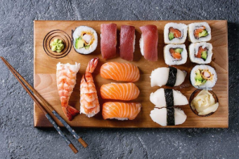
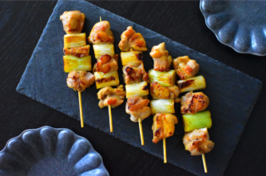
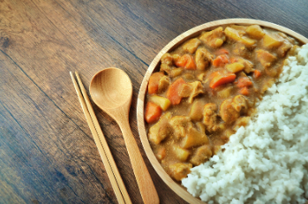

SUSHI
Prato famoso feito com arroz temperado e peixe cru ou frutos do mar, podendo ser servido em diversos estilos (nigiri, maki, sashimi).
RAMEN
Sopa de macarrão com caldo saboroso (de carne, frango ou miso) e acompanhamentos como ovo, alga e carne de porco.

YAKITORI
Espetinhos grelhados de frango e vegetais, temperados com molho tare (doce e salgado).
TEMPURÁ
Frutos do mar e legumes empanados e fritos, crocantes por fora e leves por dentro.


CURRY JAPONÊS (KARE RAISU)
Arroz com molho de curry espesso e levemente adocicado, servido com carne e legumes.
MATCHA
Chá verde em pó usado em bebidas e doces típicos, símbolo da cultura japonesa do chá.